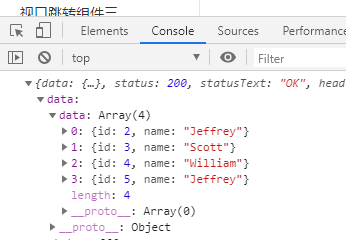
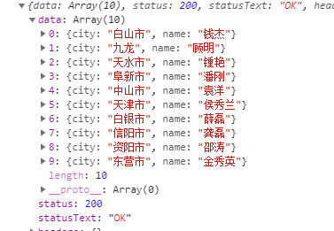

Mock
mock的配置
1 | 1.首先要安装mockjs npm install mockjs |
实例
1 | //mock文件夹下index.js文件 |
1 | //mock文件下 -> tree文件夹 -> index.js |
1 | //在main.js文件里引用 |
参数的接收
1 | //这里我们又封装了一层axios 还是一上面的代码为例传递参数 get请求 |
1 | //api文件夹下treenode.js文件 |
1 | //mock文件夹下 index.js文件 |
1 | //mock文件夹下 tree文件夹下 index.js文件 |
基本的语法
1 | import Mock from 'mockjs' |

Random的使用
1 | 1.Radmon是Mock的所及函数 他内置很多的方法 可以生成随机的数据 比如 城市的 名字的 |
1 | import Mock from 'mockjs' |

公告
感谢访问本站，如喜欢请收藏。本站主要分享前端知识，立志成为资深前端工程师，但目前是一个前端界的小学生 若喜欢可以打赏请博主喝一杯冰阔落
另外请大家多多支持淼哥的开源项目
https://github.com/flipped-aurora/gin-vue-admin
🌟🌟欢迎大家start 🌟🌟
欢迎加入博主的前端技术交流群